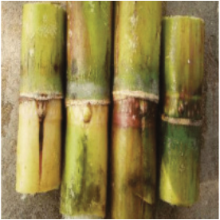

Agriculture for Secondary Schools
Figure 1.1 (e)
Figure 1.1 (f)
Figure 1.1: Planting materials
Activity 1.4
1. Referring to the pictures represented in Figure 1.1, perform the following
tasks:
(a) Identify each of the planting materials presented in Figure 1.1 (a)-(f)
above;
(b) Categorise the planting materials presented in Figure 1.1 into:
(i) Vegetative planting materials; and
(ii) Sexual planting materials.
2. Using a table, compare the advantages and disadvantages of vegetative
against sexual planting materials.
After preparing a seedbed and planting materials, there are factors that must be
considered before planting. These include spacing between and within stands,
plant population and seed rate, number of seeds per stand, depth to which seeds
are placed, and seed position with respect to the tillage operations.
Plant population and seed rate determination
Plant population is the number of plants per unit area. Sometimes, it is termed
as plant density. An optimum plant population gives plants enough resources for
growth and development. Such resources include soil nutrients, moisture, light,
and air. This leads to high crop yields if other crop production factors are kept
constant. Plant overpopulation and under population often result in reduced yields.
Overpopulation of crops results in competition for resources, whereas in under-
population, the environmental resources are under-utilised. Plant population is
7
Student’s Book Form Two